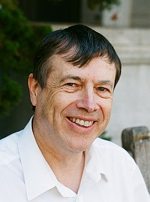

Jean Bourgain | |
|---|---|
 | |
| Born | 28 February 1954 Ostend, Belgium |
| Died | 22 December 2018 (aged 64)[2] Bonheiden, Belgium |
| Alma mater | Vrije Universiteit Brussel |
| Known for | Analytic number theory Harmonic analysis Ergodic theory Banach spaces Partial differential equations |
| Awards | Salem Prize (1983) Ostrowski Prize (1991) Fields Medal (1994) Shaw Prize (2010) Crafoord Prize (2012) Breakthrough Prize in Mathematics (2017) Steele Prize (2018) |
| Scientific career | |
| Fields | Mathematical analysis |
| Institutions | Institute for Advanced Study University of Illinois Urbana-Champaign University of California, Berkeley |
| Freddy Delbaen | |
Doctoral students | James Colliander Péter Varjú[1] |
.jpg){kind=link}
Jean Louis, baron Bourgain (French: [buʁɡɛ̃]; 28 February 1954 – 22 December 2018) was a Belgian mathematician. He was awarded the Fields Medal in 1994 in recognition of his work on several core topics of mathematical analysis such as the geometry of Banach spaces, harmonic analysis, ergodic theory and nonlinear partial differential equations from mathematical physics.[3]
Biography
Bourgain received his PhD from the Vrije Universiteit Brussel in 1977. He was a faculty member at the University of Illinois Urbana-Champaign and, from 1985 until 1995, professor at Institut des Hautes Études Scientifiques at Bures-sur-Yvette in France, at the Institute for Advanced Study in Princeton, New Jersey from 1994 until 2018.[4] He was an editor for the Annals of Mathematics. From 2012 to 2014, he was a visiting scholar at UC Berkeley.[5]
His research work included several areas of mathematical analysis such as the geometry of Banach spaces, harmonic analysis, analytic number theory, combinatorics, ergodic theory, partial differential equations and spectral theory, and later also group theory. He proved the uniqueness of the solutions for the initial value problem of the Korteweg–De Vries equation. He formulated what became known as the Bourgain slicing problem in high-dimensional convex geometry. In 1985, he proved Bourgain's embedding theorem in metric dimension reduction, which states that every metric space can be embedded into an space of dimension with distortion . Together with Vitali Milman, he contributed to progress on Mahler’s conjecture in 1987. In 2000, he connected the Kakeya problem to arithmetic combinatorics.[6][7] As a researcher, he was the author or coauthor of more than 500 articles.[8]
Together with Ciprian Demeter and Larry Guth, he proved Vinogradov's mean-value theorem in 2015.
Bourgain was diagnosed with pancreatic cancer in late 2014. He died of it on 22 December 2018 at a hospital in Bonheiden, Belgium.[9]
Awards and recognition
Bourgain received several awards during his career, the most notable being the Fields Medal in 1994.
In 2009 Bourgain was elected a foreign member of the Royal Swedish Academy of Sciences.[10]
In 2010, he received the Shaw Prize in Mathematics.[11]
In 2012, he and Terence Tao received the Crafoord Prize in Mathematics from the Royal Swedish Academy of Sciences.[12]
In 2015, he was made a baron by King Philippe of Belgium.[13]
In 2017, he received the Breakthrough Prize in Mathematics.[14]
In 2018, he received the Steele Prize for Lifetime Achievement.[15]
Selected publications
Articles
- Bourgain, Jean (1983). "Some remarks on Banach spaces in which martingale difference sequences are unconditional" (PDF). Arkiv för Matematik. 21 (1): 163–168. Bibcode:1983ArM....21..163B. doi:10.1007/BF02384306. S2CID 121419327. (See Banach space and martingale.)
- Bourgain, J. (1985). "On lipschitz embedding of finite metric spaces in Hilbert space". Israel Journal of Mathematics. 52 (1–2): 46–52. doi:10.1007/BF02776078. S2CID 121649019.
- Bourgain, J. (1986). "Averages in the plane over convex curves and maximal operators". Journal d'Analyse Mathématique. 47: 69–85. doi:10.1007/BF02792533. S2CID 120149032.
- Bourgain, J.; Milman, V. D. (1987). "New volume ratio properties for convex symmetric bodies in ". Inventiones Mathematicae. 88 (2): 319–340. Bibcode:1987InMat..88..319B. doi:10.1007/BF01388911. S2CID 123312114.
- Bourgain, Jean (1989). "Pointwise ergodic theorems for arithmetic sets". Publications Mathématiques de l'IHÉS. 69: 5–41. doi:10.1007/BF02698838. S2CID 55288816.
- Bourgain, J. (1993). "Fourier transform restriction phenomena for certain lattice subsets and applications to nonlinear evolution equations". Geometric and Functional Analysis. 3 (3): 209–262. doi:10.1007/BF01895688. S2CID 124191732.
- Bourgain, J. (1994). "Periodic nonlinear Schrödinger equation and invariant measures". Communications in Mathematical Physics. 166 (1): 1–26. Bibcode:1994CMaPh.166....1B. doi:10.1007/BF02099299. S2CID 53447933.
- Bourgain, J. (1998). "Quasi-Periodic Solutions of Hamiltonian Perturbations of 2D Linear Schrödinger Equations". Annals of Mathematics. 148 (2): 363–439. doi:10.2307/121001. JSTOR 121001.
- Friedgut, Ehud; Jean Bourgain, Appendix by (1999). "Sharp thresholds of graph properties, and the -sat problem". Journal of the American Mathematical Society. 12 (4): 1017–1054. doi:10.1090/s0894-0347-99-00305-7.
- Bourgain, J. (1999). "Global Wellposedness of Defocusing Critical Nonlinear Schrödinger Equation in the Radial Case". Journal of the American Mathematical Society. 12 (1): 145–171. doi:10.1090/S0894-0347-99-00283-0. JSTOR 2646233.
- Bourgain, Jean; Brezis, Haim; Mironescu, Petru (2001). "Another look at Sobolev spaces". pp. 439–455. (See Sobolev space.)
- Bourgain, J. (2002). "Nonlinear partial differential equations and applications: On the global Cauchy problem for the nonlinear Schrödinger equation". Proceedings of the National Academy of Sciences. 99 (24): 15262–15268. doi:10.1073/pnas.222494399. ISSN 0027-8424. PMC 137704. PMID 12432098.
- Bourgain, Jean; Katz, Nets; Tao, Terence (2004). "A sum-product estimate in finite fields, and applications". Geometric and Functional Analysis. 14: 27–57. arXiv:math/0301343. doi:10.1007/s00039-004-0451-1. S2CID 14097626.
- Bourgain, J. (2005). "More on the Sum-Product Phenomenon in Prime Fields and its Applications". International Journal of Number Theory. 01: 1–32. doi:10.1142/s1793042105000108.
- Bourgain, Jean (2017), "Decoupling, exponential sums and the Riemann zeta function", Journal of the American Mathematical Society, 30 (1): 205–224, arXiv:1408.5794, doi:10.1090/jams/860, MR 3556291, S2CID 118064221 (See Lindelöf hypothesis.)
Books
- J. Bourgain (1 October 1981). New Classes of Lp-Spaces. Springer Berlin Heidelberg. ISBN 978-3-540-11156-6.
- Bourgain, Jean; Casazza, Peter G.; Lindenstrauss, J.; Tzafriri, Lior (1985). Banach Spaces with a Unique Unconditional Basis, up to Permutation. American Mathematical Soc. ISBN 978-0-8218-2323-1.
- Bourgain, Jean (1999). Global Solutions of Nonlinear Schrödinger Equations. American Mathematical Soc. ISBN 9780821819197.[16] (Bourgain's research on nonlinear dispersive equations was, according to Carlos Kenig, "deep and influential".[17])
- Bourgain, Jean (November 2004). Green's Function Estimates for Lattice Schrödinger Operators and Applications. (AM-158). Princeton University Press. ISBN 9781400837144.
- Bourgain, Jean; Kening, Carlos E.; Klainerman, Sergiu, eds. (10 January 2009). Mathematical Aspects of Nonlinear Dispersive Equations (AM-163). Princeton University Press. ISBN 978-1-4008-2779-4.
References
- ^ Jean Bourgain at the Mathematics Genealogy Project
- ^ "Death of mathematician Jean Bourgain". The Brussels Times. 30 December 2018. Retrieved 30 December 2018.
- ^ "Fields Medals and Nevanlinna Prize 1994". www.mathunion.org. Retrieved 31 August 2019.
- ^ O'Connor, John J.; Robertson, Edmund F., "Jean Bourgain", MacTutor History of Mathematics Archive, University of St Andrews
- ^ "Jean Bourgain | Department of Mathematics at University of California Berkeley". math.berkeley.edu. Retrieved 23 April 2016.
- ^ Bourgain, J. (2000). "Harmonic analysis and combinatorics: How much may they contribute to each other?". Mathematics: Frontiers and Perspectives. IMU/Amer. Math. Soc. pp. 13–32.
- ^ Tao, Terence (March 2001). "From Rotating Needles to Stability of Waves: Emerging Connections between Combinatorics, Analysis and PDE" (PDF). Notices of the American Mathematical Society. 48 (3): 297–303. arXiv:math/0008098. Bibcode:2000math......8098T.
- ^ Tao, Terence Chi-Shen (2019). "Jean Bourgain, problem solver". Proceedings of the National Academy of Sciences. 116 (28): 13717–13718. Bibcode:2019PNAS..11613717T. doi:10.1073/pnas.1901965116. ISSN 0027-8424. PMC 6628665. PMID 31209024.
- ^ Kenneth Chang (16 January 2019), "Jean Bourgain, Problem-Conquering Mathematician, Is Dead at 64", New York Times
- ^ Royal Swedish Academy of Sciences: Many new members elected to the Academy, press release on 12 February 2009
- ^ "Shaw Prize Press Release". Archived from the original on 4 July 2010. Retrieved 28 May 2010.
- ^ Crafoord Press Release Archived 27 December 2012 at the Wayback Machine on 19 January 2012
- ^ Jean Bourgain’s Coat of Arms —Institute for Advanced Study
- ^ Breakthrough Prize Press Release
- ^ Jean Bourgain to Receive 2018 Steele Prize for Lifetime Achievement
- ^ Staffilani, Gigliola (2003). "Review of Global Solutions of Nonlinear Schrödinger Equations by Jean Bourgain". Bull. Amer. Math. Soc. 40: 99–107. doi:10.1090/S0273-0979-02-00956-4.
- ^ Kenig, Carlos E. (2020). "On the work of Jean Bourgain in nonlinear dispersive equations". Bulletin of the American Mathematical Society. 58 (2): 173–189. doi:10.1090/bull/1718. ISSN 0273-0979.
External links
- O'Connor, John J.; Robertson, Edmund F., "Jean Bourgain", MacTutor History of Mathematics Archive, University of St Andrews
- Daubechies, Ingrid; Delbaen, Freddy; Guth, Larry; Jitomirskaya, Svetlana; Kontorovich, Alex; Lindenstrauss, Elon; Milman, Vitali; Pisier, Gilles; Rudnick, Zeev; Sarnak, Peter; Schlag, Wilhelm; Staffilani, Gigliola; Tao, Terence; Varjú, Péter (June 2021). "Remembering Jean Bourgain (1954–2018)" (PDF). Notices of the American Mathematical Society. 68 (6): 942–957. doi:10.1090/noti2290.
- "The Search for Randomness | Jean Bourgain". YouTube. Institute for Advanced Study. 25 April 2012.
- "Jean Bourgain - 1/2 The orbital circle method and applications..." YouTube. Institut des Hautes Études Scientifiques (IHÉS). 14 July 2014.
- "Expansion in Linear Groups and Applications - Jean Bourgain". YouTube. Institute for Advanced Study. 8 March 2016.
- "Diphantine properties of Markoff numbers - Jean Bourgain". YouTube. Institute for Advanced Study. 4 April 2016.
- "Working with Bourgain - Enrico Bombieri". YouTube. Institute for Advanced Study. 26 May 2016.
- "Decoupling in harmonic analysis and applications to number theory - Jean Bourgain". YouTube. Institute for Advanced Study. 27 July 2016.
- "On Zaremba's Conjecture on Continued Fractions - Jean Bourgain". YouTube. Institute for Advanced Study. 19 August 2016.
- "Jean Bourgain's Impact on Asymptotic Geometric Analysis; Selected Topics - Vital Milman". YouTube. Institute for Advanced Study. 4 June 2019.